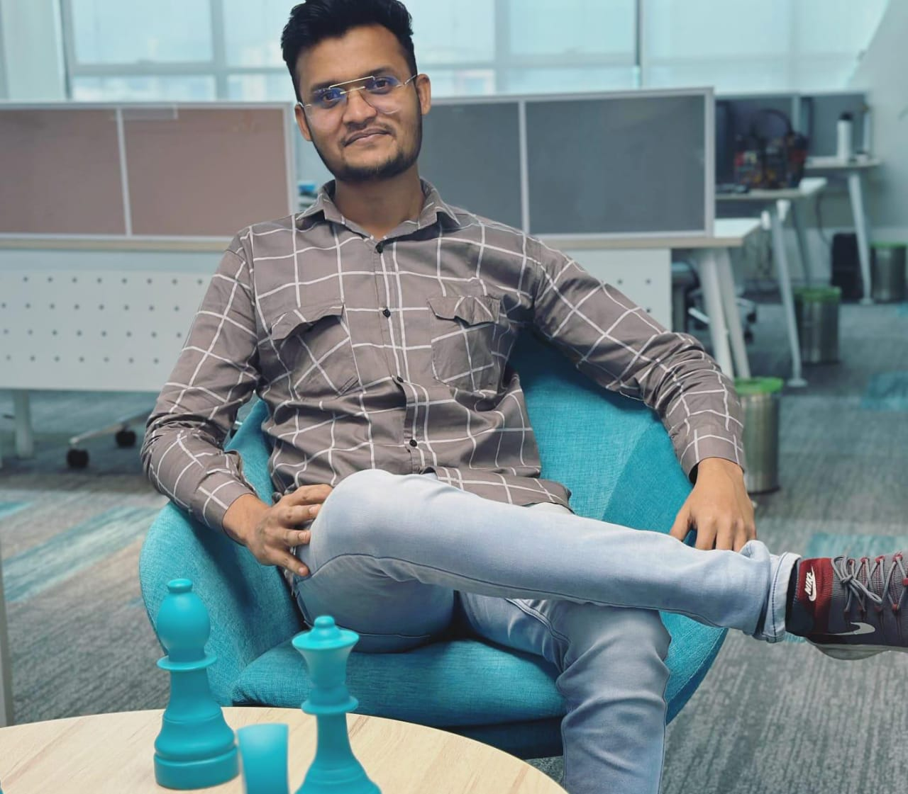
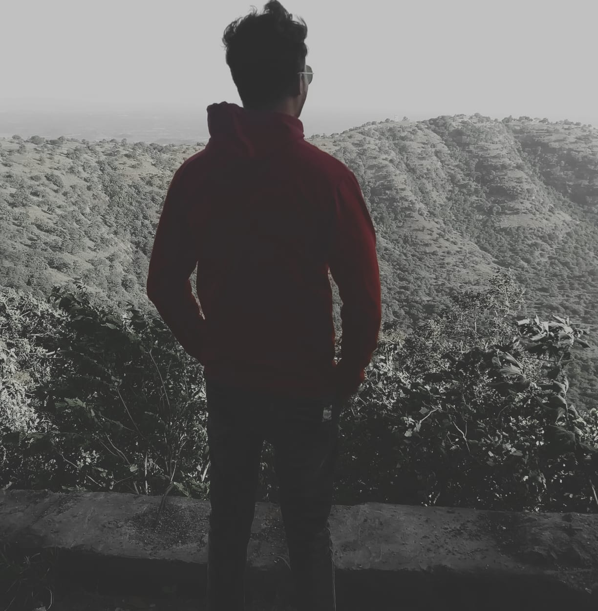
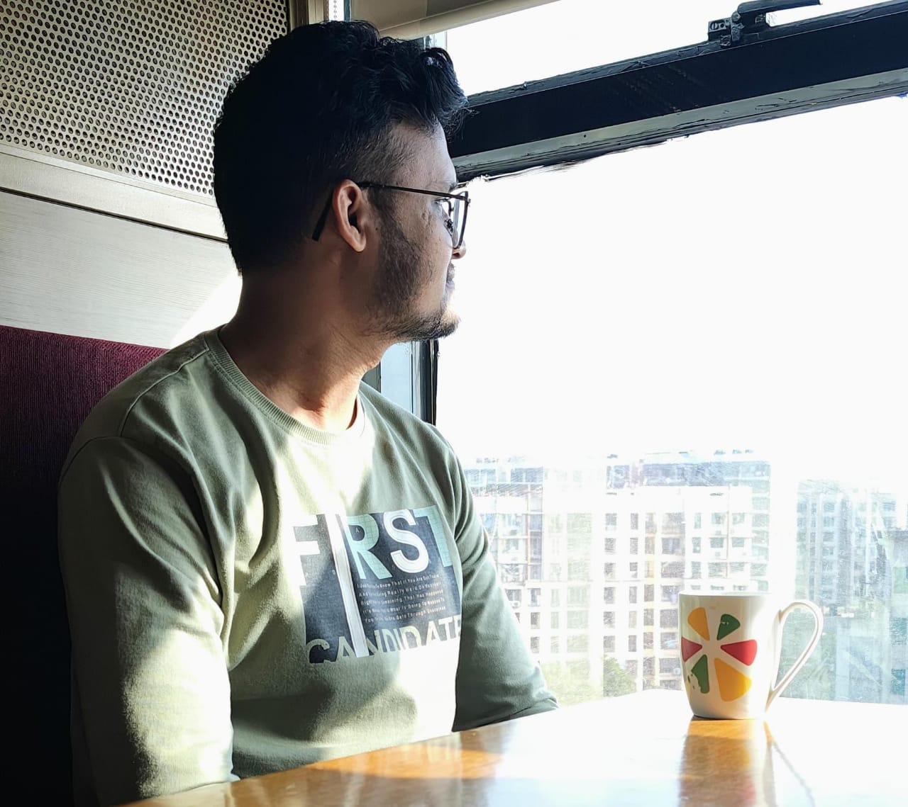

<div class="align-items-center default-container">
    <div class="col-lg-8">
        <div class="content">
            <div class="content-left">
                <h2 class="default-topic">About me.</h2>
                <p class="default-p">
                    Hi, I'm Saddam Shaikh — a Frontend Developer passionate about<span class="default-highlight"> transforming ideas into engaging digital experiences.</span>
                   
                </p>
                <p>
                    
                </p>
                <p class="default-p">
                    I’m a Frontend Developer from India, fluent in English and experienced in building user-focused web applications for a global audience.
                </p>
                <p class="default-p">
                    My journey into frontend development began in 2022 when I started exploring how to turn raw ideas into interactive digital experiences. 
                    What began as a need to analyze large datasets soon sparked a deep interest in 
                    <span class="default-highlight">programming</span>, 
                    <span class="default-highlight">interface design</span>, and 
                    <span class="default-highlight">user experience</span>. 
                    Motivated by curiosity, I went back to college to study mater of computer application and soon landed my 
                    <span class="default-highlight">first role in the tech industry</span>.
                  </p>
                  
                  <p class="default-p">
                    Fast-forward to today, and I've had the privilege of collaborating with talented teams to design and build engaging, user-focused web applications.
                  </p>
                  
                <p class="default-p">
                    I've had the chance to work with a range of <span class="default-highlight">technologies</span> and developed valuable 
                    <span class="default-highlight">soft skills</span>, including leading transformative changes to improve 
                    team dynamics and organizational culture within a tech company. My technical knowledge has expanded 
                    through hands-on collaboration with developers and rigorous study of documentation. Over time, I've gained experience 
                    with programming logic, refined software craftsmanship, contributed to the development of 
                    <span class="default-highlight">websites</span> and built <span class="default-highlight">REST APIs</span>, 
                    collaborated on building visual dashboards, <span class="default-highlight">scrapers</span>, 
                    <span class="default-highlight">crawlers</span>, and participated in retrieving and processing data 
                    from various sources.
                </p>
                <p class="default-p">
                    While my main focus is frontend development, working closely with cross-functional teams has given me exposure to modern development workflows and deployment practices. 
                    I've collaborated on projects that integrated with <span class="default-highlight">microservices architectures</span>, and I've coordinated with backend and DevOps teams using tools like 
                    <span class="default-highlight">Docker</span>, <span class="default-highlight">Kubernetes</span>, and <span class="default-highlight">Azure DevOps</span> to ensure smooth deployment of web applications.
                  </p>
                  
                <p class="default-p">
                    I do think <span class="default-highlight">DevOps</span> plays such an important role in enhancing 
                    <span class="default-highlight">collaboration</span> between <span class="default-highlight">development</span> 
                    and <span class="default-highlight">operations</span> teams because it <span class="default-highlight">streamlines</span> 
                    processes and improves the overall <span class="default-highlight">efficiency and quality of software delivery</span>. 
                    The optimization of workflows and reduction of system delays are significant factors for the success of project outcomes.
                </p>
                <p>
                    
                </p>
                <p class="default-p">
                    As a Frontend Developer, I've worked on secure authentication flows using 
                    <span class="default-highlight">OAuth2.0</span> and <span class="default-highlight">JWT</span>, 
                    implemented end-to-end testing with <span class="default-highlight">Cypress</span>, 
                    and contributed to user-facing documentation. I've also collaborated with teams managing 
                    <span class="default-highlight">PostgreSQL</span> databases and supported front-end integration with 
                    stream-processed data pipelines. My experience includes participating in 
                    <span class="default-highlight">User Acceptance Testing (UATs)</span> and using tools like 
                    <span class="default-highlight">Prometheus</span> and <span class="default-highlight">Grafana</span> 
                    to monitor application performance and frontend stability.
                  </p>
                  
                  <p class="default-p">
                    I have to share this — I know many developers probably say this, but it's absolutely true for me: 
                    my passion for frontend development goes far beyond just work. I thrive on <span class="default-highlight">solving complex UI challenges</span> 
                    and experimenting with new technologies and frameworks, often just for the fun of it. This is one of the key reasons I pursued a Master's Degree — 
                    driven by a deep curiosity to <span class="default-highlight">transform creative ideas into interactive, user-friendly experiences</span>.
                    Whether it’s diving into documentation, exploring innovative front-end solutions, or <span class="default-highlight">sharing insights</span> with my peers, I’m constantly 
                    motivated by learning and improving my skills. From building personal projects with the latest tech stacks like <span class="default-highlight">Angular</span> and 
                    <span class="default-highlight">ReactJS</span> to implementing testing frameworks like <span class="default-highlight">Karma</span> and <span class="default-highlight">Jasmine</span>, 
                    my focus is on delivering clean, efficient, and engaging user interfaces. This mindset not only fuels my technical growth but also contributes to a collaborative 
                    and dynamic team environment.
                </p>
                <p>
                    
                </p>
                <p class="default-p">
                    Now, we've covered the professional side. On a personal note, here are a few things about me: I'm passionate about  
                    <span class="default-highlight">documentaries</span>, <span class="default-highlight">purpose-driven organizations</span>,  
                    black coffee, captivating book stories, <span class="default-highlight">teamwork</span>,  
                    <span class="default-highlight">science fiction</span> and <span class="default-highlight">suspense</span> movies (they're the best!),  
                    pesto sauce, Linux, <span class="default-highlight">instrumental music</span>, physics and math, and the joy of community experiences. 
                    I wish I could tell you how much I love philosophy and the stories of explorers. When traveling, I enjoy documenting my 
                    <span class="default-highlight">whereabouts</span> and <span class="default-highlight">experiences</span>,  
                    so I can revisit them later.
                </p>                   
                <p class="default-p">
                    I am continuously learning and adapting to new technologies and methodologies. 
                    My goal is to create efficient, scalable, and user-friendly <span class="default-highlight">software solutions 
                    that make a difference</span>. Whether it's <span class="default-highlight">frontend development</span>, 
                    <span class="default-highlight">back-end services</span>, or <span class="default-highlight">full-stack applications</span>, 
                    I am <span class="default-highlight">passionate about every aspect of software development</span>.
                </p>
                <p class="default-p">
                    Now that you've read this far, let me wrap this up with a final thought.
                </p>
                <p class="default-p">
                    Humankind is a species that constantly pushes the boundaries of technology. We are explorers at heart. 
                    I take great pleasure in contributing to our <span class="default-highlight">shared story</span> from the frontier of tech.
                </p>
                
            </div>
            <div class="content">
                <div class="content-left">
                    <h2 class="default-topic">Reach out.</h2>
                    <p class="default-p">
                        Follow me on social media, check out my GitHub account for projects, or <span class="default-highlight">reach out to arrange a meeting</span>.
                        I would be happy to discuss how my <span class="default-highlight">problem-solving skills</span> can help address the challenges you are facing.
                    </p>
                    <button>
                        <a routerLink="/contact" class="a-green">
                            > Contact me
                        </a>
                    </button>
                </div>
            </div>
        </div>
    </div>
</div>
